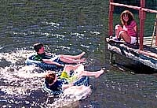
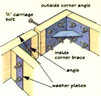
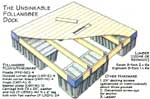
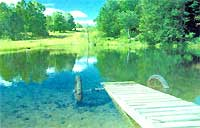
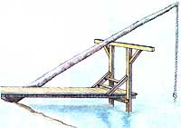
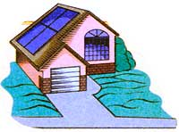
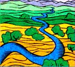

Adding Value: Your Land and the Bottom Line
A beautiful, versatile, and valuable addition to any yard.
Considering the variety of artificial swimming pools available today, it's a wonder people still bother digging an old-fashioned swimming hole. Yet even with advances in structural materials and filtration systems, and despite the advent of solar covers, above-ground designs, lap pools, and hot tubs, many folks still prefer a dug pond. Why? It boils down to three basics: value, aesthetics, and pleasure.
Given the right piece of terrain, you're going to get more-dollar for dollar-out of a pond than out of a swimming pool. A bare-bones in-ground swimming pool, 16 by 32 feet, costs $16,000, including neither site preparation nor filtration equipment. Add taxes and landscaping, and the price tag will be closer to $20,000, and that doesn't include ongoing water, chemical, and electrical costs. Depending on your location, a fence may be required, as well as additional liability coverage.
Above-ground pools are cheaper, roughly $2,000 to $3,000 for a 20 foot round pool, which includes neither installation nor filtration equipment. By the time you're finished-and you're never really finished, because re-circulating pools require periodic maintenance, chemicals, water, and electricity-you'll be in for $5,000.
For the same price, its possible to dig a pond roughly 80 feet in diameter-four times the surface area and twice as deep! A natural pond usually needs neither pumps nor chemicals and will add equity to your property. Several real estate appraisers I talked to estimated that an attractive pond is often worth more than its construction costs, although they admitted it's hard to put a figure on it. They also acknowledged that the presence of a pond will often clinch a sale. Unlike an artificial pool, a pond is a unique natural asset which can't be purchased off the shelf and confers status to a property. In fact, the mere presence of a pond site on a piece of land usually adds value.
Real estate appraisers, generally a conservative lot, often give a pond more value than a swimming pool, depending on the quality of the pond, including its size, banks, depth, and the reputation of the builder. When I asked one Vermont appraiser what value he gave to swimming pools, he barked, "Zero! If they're concrete, the walls crack!" He added that he knew three home buyers who recently had their swimming pools filled in. Above-ground pools add little or no value either, and if they include vinyl liners, they have to be replaced every three years. He noted that one of his clients had a half-acre spring-fed pond, well maintained, which provided an attractive view from the house. He appraised it at $5,000.
That sparkling view from the house is another reason people build ponds. One pond builder I know sums it up in a word: aesthetics. A pond has an astounding ability to enhance visual appeal. The eye is drawn naturally to water, whether it's the mirror surface of a calm day or a liquid kaleidoscope stirred by the wind. The surface of a pond is always changing, reflecting new cloud patterns, sunlight, moonlight, changes in weather, and the arrival of waterfowl. Anyone who has watched a swallow circling over a pond, dipping in and out of the water, knows the simple pleasure of pond gazing.
For centuries, the temples of China and Japan have incorporated ponds to enhance the spiritual experience of worshippers. Their designers created distilled versions of nature at its best, a small taste of paradise on earth. Today, the tradition of using ponds to create oases of peace continues in coral backyards.
Most people don't set out to build a pond simply to raise real estate value or improve the view. The majority of people I work with want, fast of all, a place for swimming. What makes a swimming pond superior to a swimming pool? For starters, it's likely to be bigger. Few swimming ponds are smaller than fifty feet in length or diameter because of depth and slope requirements. Ponds should be at least eight feet deep, with slopes no steeper than 2:1, and those requirements can't be met in small structures. In fact, flatter slopes are preferable for swimming access, which suggests even larger ponds.
Swimming ponds are usually deeper than swimming pools, which can mean safer diving and more room for underwater exploration with or without a scuba tank. Greater depth and volume also help stabilize temperatures, preventing the water from heating up unpleasantly, which is often a problem in swimming pools.
Tim's new book, entitled Earth Ponds The Pond Owner's Manual and Resource Guide (call 1-800-888-9098 and ask for book ME B261), as well as his other guides to pond building are available through Mother's Bookshelf.
But there's more to swimming ponds than size. The surrounding landscape and fresh, unchlorinated water give pond swimming a feeling more like an adventure than a bath. Swimming morning laps around my pond, sometimes in a mist hanging over the water, sometimes streaked by the sunrise, I feel about as close to paradise as I expect to get this side of heaven. Some of it has to do with the quiet: no humming filtration systems or vacuum cleaners. The rest has to do with the water. Swimming in a natural pond fed by a mix of surface runoff and spring water is like taking a bath in a mineral spring. The water is more than invigorating, it's therapeutic. We're talking about the difference between immersion in living water and dead water.
How does a land owner create a swimming hole overflowing with living water? Building a swimming hole demands the same soil and water requirements of any average embankment or excavated pond, only more so. A pond for raising fish can be turbid or full of aquatic vegetation, as long as the fish remain healthy; a pond for crop irrigation may drop several feet with every application. But the best swimming hole is one that stays topped off most of the time and that is free of weeds and algae. Pond owners call it exchange: the steady inflow and overflow which keeps the water fresh, oxygenated, cool, and unstratified. The more fresh water circulating through a pond, the more efficient the biological decomposition of organic waste material and the less the opportunity for algae and unwanted vegetation to arise. That's why I like to design swimming ponds a little small for their watersheds. For example, if a 15 acre watershed will fill a one-acre pond, the same 15 acres will keep a half acre pond overflowing at a greater rate. in other words, better to slightly undersize a pond than oversize it. Keep in mind that pond outlet pipes and/or spillways must he carefully designed to carry runoff during flood conditions.
Site requirements include other watershed considerations. The soil in the pond site should contain a minimum of 10 to 20 percent clay to insure good water retention. Beware of sandy soils and shale which won't retain water. Avoid ledge rock which can also lead to leaks. Pond sites with porous soils can sometimes be remedied by bringing in extra clay to line the structure or using plastic membranes.
Water sources include surface runoff, springs, streams, and sometimes wells. Avoid running large streams directly into a pond because of the potential for erosion, siltation, turbidity, and bone-chillingly cold water. Many stream fed ponds use a piping system for the feed, so inflow can be controlled.
Perhaps the most important procedure in pond sitting is the test pit. By digging several test borings in the site, usually about 8 feet deep, you can determine soil quality, water table, and the unwelcome presence of ledge. Often, a test pit in a good site will quickly fill with water, creating a miniature pond, which can be monitored during dry weather to forecast reliability. I've worked on plenty of pond rescue efforts, and most were built without preliminary test pits.
The watershed should also be examined for possible contaminants. Runoff from agricultural land may contain chemical or organic fertilizers, which can lead to algae problems. Industrial chemicals or septic overflow should be avoided, as should runoff from eroding soil, which can lead to siltation.
Your county NRCS (Natural Resources Conservation Service) should be able to help you determine the exact size of your pond watershed, which is important in calculating pond size and spillway requirements. Acreage can also be calculated using USGS (United States Geographic Survey) topographic maps, if you know how to read the contours. The NRCS also has literature on pond construction, as well as soil maps. Try your state university Extension Service for additional information about ponds, raising fish, and other aquacultural topics.
You may also benefit from calling in a pond contractor or consultant in the early planning stages. A contractor or consultant can help you site and design the structure, and perhaps follow through on the project. In fact, it doesn't hurt to call in several contractors to make a bid on the project. It won't cost you anything, and you may pick up some good ideas. When it comes to selecting a contractor for the pond, be sure to check out their work. You can also learn a lot by taking a tour of neighboring ponds. Helpful contacts for choosing a contractor include landscape architects, municipal officials (who grant pond permits), fish farmers, and general contractors. Make sure that your pond complies with state and local building regulations, if any. If your pond site is considered a wetland, a permit may be necessary.
Pond costs will vary affording to size, materials, and regional pay scales. Ponds in my area of Vermont range from as little as a couple of thousand for a quickie, to as much as ten times that and more for more elaborate projects. A one-acre excited pond may cost more on dig than a similar size embankment pond because it takes longer to remove all the material than simply to push up a dam. Keep in mind that excavated material not used in an embankment or for fill may need to be trucked away at additional expense. It can also be traded or sold, depending on the market.
Some pond builders work for a contract price, while others prefer time and materials. The problem with paying by the hour is that bad weather or other problems can slow down construction and raise the cost.
Besides ignoring test pits, another mistake land owners often make is being in a hurry. This is especially risky for people who haven't lived on a piece of land for long, and don't have a good feel for variations in the water table and other siting considerations. Before digging my pond, I spent three years on the land, time enough to check out several sites during different seasons, as well as to monitor test pits and then clear the site by hand, which cut expenses when it came time for the dozer to move in. That the pond site happened to be directly south of my house turned out to be a stroke of luck, winding up as the centerpiece of my view. When you've got the sun and water out your front window, you know you're blessed.
In addition to plentiful fresh water and low infiltration soil, a good swimming pond also benefits from thoughtful landscaping. Trees and shrubs can be added to a pond site after construction, of course, but don't ignore existing assets. You'll probably want to remove most trees from the perimeter of the pond to prevent leaf litter adding unwanted organic matter to the water, but keep in mind that a mature tree in the right place can provide welcome shade for swimmers and fish. And keep an eye out for a large boulder or two, in or near the site, to skid into position along shore as a diving rock.
Another feature you might consider adding to a swimming pond is an island. Ponds under an acre or so may not benefit from an island, which displaces too much water, but in larger ponds, it may provide a desirable swimming destination and perhaps even a camping spot. An island also offers refuge for waterfowl. Plan island construction carefully with your contractor; I've run across several pond leaks that may have begun in island soil which was not compacted or lined with clay.
Now for the beach, the essential ingredient in a good swimming hole. Farm pond purists might scoff at kids needing a beach, but soft sand does encourage them to spend more time in the water and to learn to swim faster. I've also heard plenty of adults complain about how much they hate wading through mud to get out to deep water. A sandy beach, above and below the waterline, improves access to the pond by providing firm footing as well as an enlarged shallow area where kids can learn to swim without getting in over their heads. Parents often rope off a shallow area using buoys on a line to create a safety zone for kids.
Ironically, the soil conditions that lend themselves to a good pond don't offer the best conditions for a bathing beach. To build a pond, you want soil that's rich in clay, which may be stony, hard, or muddy. For swimming and wading, however, something easy on the feet is desirable, and that means sand.
If you're starting from scratch, plan the beach area before the contractor does the final grade. Beaches are often located at a point on the shore nearest the access path. This may be convenient, but beach siting should also take into consideration water depth and shore slope. Look for shallow water in the first ten to twenty feet offshore, especially if you have children. The slope should be gradual so that young swimmers have three to four feet of water to wade in, before the water deepens. Avoid submerged rocks, mooring anchors, drain pipes and outlets, and electrical wiring. The shore itself should be gradually sloped for easy access to the water, to allow for sunbathing and to prevent sand from eroding into the water.
After deciding on a beach site, it's time for construction. Until recently, many contractors dozed out a bench two to three feet deep and added sand, knowing how quickly the soil below mixes with sand. Lately, however, it's become possible to carve out a shallower base, cover it with a geotextile fabric, and use less sand to get a longer-lasting beach. Have your contractor dig out an area about 6 inches lower than the existing grade for the sand. The fabric keeps the soil and sand from mixing and enhances drainage.
Beach size depends on your ambitions and budget, but it shouldn't take much more than a 20 by 20 foot spread of sand to keep a family happy. In estimating the size of your beach, remember that the submerged area you cover with sand will discourage aquatic weeds and algae. much like mulch squelches weeds in a garden. In some algae-plagued ponds, the leach may be the lest place for swimming.
When it comes to buying sand. there's little advantage in cutting corners on quality Riverbank sand is cheap, but it may turn your pond into a turbid mess. Unless you're planning to cover a large area, washed masonry sand is best. Check with your local concrete supplier, where sand is usually available. To estimate your sand costs, multiply the dimensions of your beach in feet (length by width by depth) and divide by 27 to get cubic yards Sand is usually sold by the ton, and it taken roughly I 1/3 tons to fill a cubic yard. Fabric will sin $I00 or so for a 20 by 20 foot beach.
Whatever you do, don t try making a midnight run on the village sand pit. Road sand is often mixed with salt. It's great for melting highway ice and rusting out cars but no good for fish.
If you're adding a beach to an existing pond. it's easy to dump a load of sand on shore and spread it out, but you'll see it wash into the pond sooner than a well-made beach. To build a durable beach, lower the water level so you can work in the dry and follow the procedure for a new pond.
In addition to a beach, ponds often benefit from floating rafts and piers Rafts offer many of the advantages of an island, with the option of being removable to make way for skating. Unlike piers, they're off limits to kids you don't want tumbling accidentally into deep water. Piers offer an area to mount a diving board, tie tip a canoe, install a fish culture cage, or just go for a stroll.
One of my favorite pond accessories is the old fashioned rope swing. I have vivid memories of swinging off a steep bank on a thick manila rope tied to a tall tree, and sailing out over the water until I let go and plummeted into the water like a teenage Tarzan. Nowadays I don't see many ponds with the right combination of steep hill, tree, and deep water, but it is possible to hang a rope swing from a tree trunk leaning over an end-of-the-pier lumber frame. Outer swimming pond improvements include camp sites, gazebos, sauna baths, and outdoor hot tubs.
I know parents who delayed building pond until their children were old enough to swim. They didn't want to add to an already long list of child-care anxieties. On the other hand, plenty of kids grow up around water and survive it. If you re going to build a swimming hole here are a few suggestions to help drown-proof it. An adult should always accompany any children who don't know- how to swim. Only after demonstrating adequate swimming skills should children be allowed to swim or go boating without wearing a life vest. Kids who do know how to swim should not go in the water alone.
It's a good idea to hang a life ring near the water and occasionally practice tossing it to a swimmer. Even if its never needed, it shows you're serious about safety. As I mentioned before, a shallow bathing area marked by a floating rope will keep youngsters in safe waters, where you can keep track of them Most anxious moments with my daughters have been at a crowded public beach where it can he hard to tell one kid from another-not a bad argument for building your own pond.
Piped spillways or outlets should be covered with a trash guard to keep kids out. Screening devices will also stop wayward beach balls from plugging pipes. It doesn't take long for a blocked overflow to back up, leading to a flooded pond.
You may also want to consider fencing around the pond so that kids-yours and your neighbors-don't visit without permission. Check with your insurance agent and town officials to make sure a pond doesn't qualify as an "attractive nuisance," which could make you liable for injuries to visitors, invited or not. Having said that, I should add that I don't recall ever seeing a pond fenced to keep out anything but cows or sheep.
Water quality can sometimes be a problem, especially in older ponds or ponds in watersheds of questionable purity. I got the worst earache of my life after swimming in a Maryland harm pond contaminated by runoff from a cow corral. If you have any concerns about water quality, have the water tested for coliform bacteria. I wouldn't recommend sharing a small swimming pond with geese or ducks. They can tie the source of swimmer's itch, an irritating skin condition. A pond full of leeches is not particularly inviting either. unless you believe in the therapeutic effects of being bled. I've seen everything from chemicals to beefsteak traps used to eliminate leeches, but nothing is as effective as crawfish. FN e got crawfish in my pond, and we're not only leech-free, but the crawfish also chew up unwanted algae.
Standing in the wading area, I occasionally feel a crawfish rubble on my toes, but it soon moves along. The way I see it, its pan of the adventure of owning a backyard swimming hole.
Land Value... Without building on it
By Jean Vernon
Each piece of land is unique, and there are almost as many ways to improve the value of land as there are parcels of land and willing land owners. However, there are some universally acknowledged tried-and-true methods of improving land values. Every person who owns country property will find several of these things within their ability, and improving your land provides a great source of personal satisfaction.
1 Appreciation. This is the single most important way for land to gain in value. The best part is that it works automatically, unless some negative factor affects the land. For this method to work to its full potential, it must be considered even before the land is purchased. Care should be taken when evaluating the location of the property. Is it within reasonable driving distance to jobs and shopping areas? Is the growth pattern of the area likely to extend towards the land? Is it in an area of good job growth and prosperity, or is it in a region that is losing jobs? Lack of available work will affect real estate values in a negative fashion. Sometimes, it greatly depreciates land value.
Remote land will never appreciate as quickly as land that is closer in, but nonetheless, in a normal growth market, its value will steadily rise.
Real estate in most neighborhoods, including rural land, goes through about a five-year turnover cycle. More properties will thus be on the market every five years or so than in mid-cycle. When placing land on the market, it might be wise to consider what stage the cycle is in. This may affect pricing and marketing strategy. Your realty agent Will be the best source of information about current trends in the area .
One other major factor when considering appreciation of land value is that selling costs are expensive. Excise taxes, title insurance, commission, recording, and other costs are often all charged to the seller. In an average area, it can take as much as five years to realize a tidy profit after all of the selling expenses are paid.
2 Install or Provide for Utilities. Raw land will usually be worth much more if the buyer is assured a home can be built there. In the long run, providing for utilities is often worth a great deal more than the cost If sewer lines are not available, have the ground perk tested to verify that a septic system can be installed on the property. Soil varies a great deal and a perk test will indicate which type of septic system is acceptable. Once that is determined, you or a buyer will be able to ascertain the cost of the system.
If water lines are available, have them stubbed to the property. If not available, you might consider drilling a well. You can also develop five water, provided the source and development makes it potable.
3 Provide or Improve Access. Though most people don't realize it when buying land, poor access can be the single greatest detriment to enjoyment of property. Not only will good access provide you with the freedom to enjoy your Is land, but good access can be pointed out to the buyer when the property is placed on the market.
Another facet of access is easements. Make sure your land is properly served by an ingress/egress easement and the necessary utility easements. Inadequate or lacking easement provisions is a problem in all parts of the country. Although some are necessary, make sure the land is not overly burdened with easements that serve other parcels.
4 Fencing. Another capital improvement, fencing, will almost always enhance the value of land. It should be installed in accordance with what the land is used for. A white board horse fence is not appropriate for a large cattle operation but is perfect for the showy horse farm. Conversely, a well-stretched, well stayed barbed wire fence will be positively appealing to a cattleman.
Fencing can accomplish several objectives at once, and different types of fencing are used for specific applications. A fence can define the perimeter of the land, contain livestock, or keep unwanted animals out A cross fence can keep livestock off of farm ground or provide efficient use of pastures. A yard fence can protect valuable landscaping and add interest and beauty to the yard area. A high deer fence can protect orchards, ornamental trees, vegetable gardens, and flowers.
No matter which type or types of fencing is used, it should be well-maintained, and the maintenance cost and time factor should be considered when choosing it.
5 Farm or Tree Farm. If you own farm land, utilizing it will definitely increase its value. Not only will the crop bring in cash, but it will also increase the eye appeal. If you do not have the time and capability to farm, there are usually neighbor farmers who will operate the farm on a lease or share basis. Your production records will provide proof to a buyer of the value of the land.
If you own timber land, you could actually decrease the value by not taking care of it. Trees sustain damage in a variety of ways, from diseases like root rot to insect damage, parasite vegetation, dry weather stress, snow breakage, and other causes. All of these leave your woods in a messy condition and often perpetuate problems. The forest can be managed to promote healthy tree growth, good wildlife habitat, plus recreational use. All of these will increase the value of your land.
If you are not familiar with good forestry practices, get together with a local forestry consultant. He or she will advise you on proper tree spacing for maximum tree nutrients and sun exposure, how to provide wildlife corridors, and how to treat or prevent insect and disease damage. It may be that you should thin your timber for optimum forest health. That may provide cash that you could use for future forest enhancement.
A forest in good condition will always be worth more than one that is not cared for, with valuable wood actually lost and wasted through lack of care. A thriving forest that provides good wildlife habitat should not necessarily look as groomed as a park, but care should be taken to lessen the chances of loss due to fire.
6 Own or Purchase Property Rights. This seems self-evident, but not all rights are sold with each piece of property. Most land purchases include timber and mineral rights, among other rights to property. However, in some areas these two rights were commonly sold in the past. To secure badly needed cash, many farmers sold perpetual timber rights during the thirties-the trees were just a hindrance to a farming operation, anyway.
The simplest thing to do is make sure you receive these rights when purchasing property. If you did not receive them, you can try to buy them back. Sometimes timber companies will log one last item and then offer the timber rights to the landowner. If these rights become available, you should always jump on them, as it may be a one-time offer Likewise, mining companies and individuals may hold all or part of the mineral rights, but can sometimes be persuaded to sell them back to you.
Check your title report to determine if anyone else owns the timber, mineral, or other rights. Contact them about the possibility of buying back the rights. Land with all of the rights is definitely worth much more than land that is lacking one or more rights.
Water rights are no longer a matter of title in most states, and unlimited water rights are almost a thing of the past. In fact, the water rights issue can be very confusing. Some properties have irrigation or other water rights; some do not. Each state has its own policy about water rights. Most states allow at least domestic water rights for each dwelling, but in areas with a scarcity of water, even domestic rights may be impossible to obtain. When buying land, be sure that you receive rights to have or develop domestic water at the very least. Domestic rights usually include the house, yard, and a limited number of livestock. If additional rights to water become available, it may greatly enhance your land if you obtain them. For example, shares in irrigation districts sometimes come up for sale.
Having or increasing your rights to water will almost always increase the value of your land. Without at least a domestic water right, your land may be very limited in value.
7 Have a Master Plan. Before you start building a home or adding barns, outbuildings, and other improvements you should develop a comprehensive master plan for the land and your intended developments. That way, your additions will be arranged in a way that will most enhance the value of the property. For example: a barn should be close enough to visit easily and all buildings should have sufficient spacing to prevent spread of fire if one should burn.
8 Remove Junk and Care for the Soil. Many old farmers and farms have accumulated more than their share of old cars and junk, and modern landowners are not much different. That is because dumps and transfer stations are often costly and a great distance from rural land, and who knows, you might need that junk someday. Plus there is ample space for storage. Not only is this unsightly, but it provides ideal housing for snakes and rodents. While is prudent to keep a certain amount of old and surplus stuff around, getting rid of the bulk of this accumulated debris will always improve the value and salability of land.
Caring for the soil includes treating for local noxious weeds, either by hand-picking or sprays. A purchaser definitely does not want to face a major noxious weed problem, and many counties will actually treat the weeds and charge you for it and/or levy fines it you don't handle it.
Prevent or treat erosion problems. Erosion will definitely decrease the value of land. The U.S. Government Soil Conservation Service can offer help in evaluating erosion problems and recommend treatment. Sometimes there is also money available for shared erosion control. Pick rocks from farmland and pasture. This should be done on a regular basis. It increases productivity and thus the value of land.
9 landscape Your House and Grounds. From major projects to the small finishing touches in the yard, landscaping can greatly enhance the value of your land. Landscaping is one of the areas in which you can give free reign to your imagination and creativity. However, for the best effect and enjoyment, there are a few simple guidelines to follow when creating your Garden of Eden.
Even though all tasks can not be accomplished at once, it might be a good idea to have a master plan. When creating the plan, special attention should be given to "curb appeal" or "approach appeal." When arriving at the property, the overall effect should be a welcoming feast for the eyes. The watering system should be a major component of the master plan.
With proper planning, creating wonderful landscaping does not necessarily require vast amounts of cash. Relatively inexpensive shrubs and flowers can be lovely if selected and placed with care. Any landscaping will look expensive if well taken care of. You can plan for three seasons of blooming flowers, add interest with raised beds, and integrate natural areas that encourage wildlife. With the master plan, it will be much easier to integrate major projects like decks, ponds, and walkways in subsequent years, and these will add to the cohesive whole rather than have a hodgepodge effect The addition of fencing can greatly enhance your landscaping by outlining special areas; you might, for instance, consider a decorative fence between the yard and pasture.
When selecting shrubs and flowers, a good rule of thumb is to have at least three heights of plantings and to vary the color and texture of the vegetation. One of the biggest mistakes people make is not realizing how big the plant will be at maturity and planting too close to the buildings. Avoid planting a tree like an artificial next to the house like an artificial monument. Don't forget to include the outbuildings when creating your master plan. Well-placed low-maintenance landscaping around the outbuildings will greatly enhance visual appeal.
One last caveat: If you live in an area with acute fire seasons, be sure to consider fire hazards when selecting and placing shrubs next to your home and outbuildings. A green, well-watered landscape around your home and outbuildings will, however, actually add fire protection. Your definition of well-watered could run from using a good sprinkler...all the way to...
10 Build a Backyard Swimming Hole. Who says land improvement ain't fun? Leaf through the preceding pages for our story.
|
 PHOTO: ROBIN THOMAS A dock that can be rolled back in winter will allow better diving and more room for skating. |
 ILLUSTRATION: VINCENT BABAK If you don't have a tree, try this homemade swing and rediscover the best way to get wet. |
 TIM MATSON |
|
 GAIL LARROCA |
 |
|
|
|
 |
|
|
 |
|
|